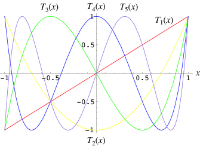

Though I myself am doubtful about a lot of explanations here. I’ll remember and explain whatever I can.
Lets first start with the basics, The chebyshev polynomial of degree $n$ is dentoed by $T_n(x)$ and given by the formula,
$$ \begin{equation}T_n(x) = cos(n cos^{-1}(x))\end{equation}$$
They form the recursive realtion given by, $$T_n(x) = cos(n cos^{-1}(x))$$
$$T_{n+1} (x) = 2 x T_n(x) - T_{n-1}$$
Extrema of Chebyshev polynomial $T_n$ are given in the form of,
$$ x_k = cos\left(\frac{2k-1}{2n}\pi\right),\ \ \ \ \ k=1,2,\dots, n$$
They look something like this…

the extrema of Chebyshev polynomials are distributed over the entire range of the approximation and have alternating values of plus or minus unity. These characteristics make Chebyshev polynomials an ideal basis for approximating functions Its a well known fact that Chebyshev function approximation is as good as it gets.
It is known that the mean squared error for a function fitting is minimum for a minimax function. But evaluation of a minimax polynomial is computationally expensive. Chebyshev polynomial fitting is quite close to minimax polynomial fitting and is computationally much cheaper.
$$f= \sum_{i=0}^M c_iT_i$$
where $T_i$ is the Chebyshev polynomial of order starting from i. {c_i} indicate the chebyshev coefficients. Normally the chebyshev coeffcients falls off exponentially. Partly i used to think it was because that the chebyshev polynomials of order $i$ had a $2^i$ term as the coefficient of $x^i$. But the prof said that it was because of that the chebyshev coefficients dropping rate is directly proportional to the Region Of Convergence.
In order to apply stable Chebyshev fitting the taylor expansion of the function should have a bounded reminder term. Other than this Chebyshev can be normally shrunk in the number of terms used for the polynomial fitting with a bounded error which is normally the sum of magnitudes of all the coefficients of the neglected terms. This is because the max value of the polynomials is +/- 1 and because the chebyshev coefficients die out much easily this error is bounded with a very small value when you neglect the higher order terms.
A very good thing about chebyshev polynomails i liked was the intution or a way to look at it. It can be looked as though it takes the points on the real line from -1 to 1 and maps them to a unit circle of radius 1 and center 0 and then back to the real line. If u think about it this mapping sort of elongates the function and makes the curves much less steeper. Thus it can be seen as to why the Chebyshev fitting requires much less order polynomial then its counter Taylor expansion, though both are polynomial fittings.
When looked at the recurrence equation of chebyshev polynomials we have,
$$T_{n+1} = 2xT_{n} -T_{n-1}$$
Analysing this equation we get that the Chebyshev polynomial derived from this can only lead to stable solutions within +1 and -1. Analysis of the roots of characteristic equations makes it evident.
Chebyshev does better than fourier in almost all cases except for periodic functions. Where fourier can leave Cheby in dust. But both of them do worse for functions with non differentiable peaks or valleys within the interval of consideration. It is advised to break the functions at such peaks and then do Chebyshev fitting on separate parts for better results.
License
Copyright 2017 Parth Thaker.
Released under the MIT license.